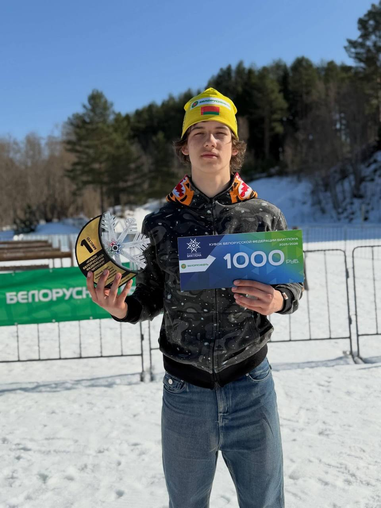

Биатлон
Даниил Малышев (род. 2011, Жлобин) — юный белорусский биатлонист, воспитанник Центра олимпийского резерва г. Жлобина. Выступает в возрастной категории юношей 2011 года рождения и уже имеет в активе победы на республиканских стартах.
Даниил тренируется в системе ЦОРа Жлобина — в городе традиционно сильная лыжно-биатлонная школа, где с ранних лет делают упор на выносливость, технику лыжного хода и работу на рубеже. С самого начала тренеры отмечали у него стабильность в стрельбе и хорошую скорость на дистанции — качества, которые в биатлоне особенно ценны в юном возрасте.
Ключевые результаты Даниила:
Тренеры подчёркивают, что Даниил отличается не только скоростью, но и психологической устойчивостью: он спокойно переносит напряжение на рубеже и редко допускает грубые ошибки в стрельбе даже при высокой частоте пульса.